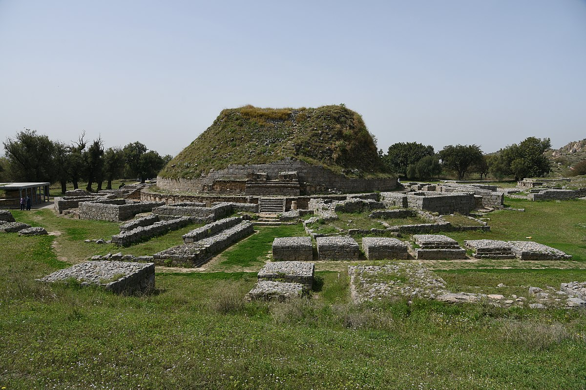
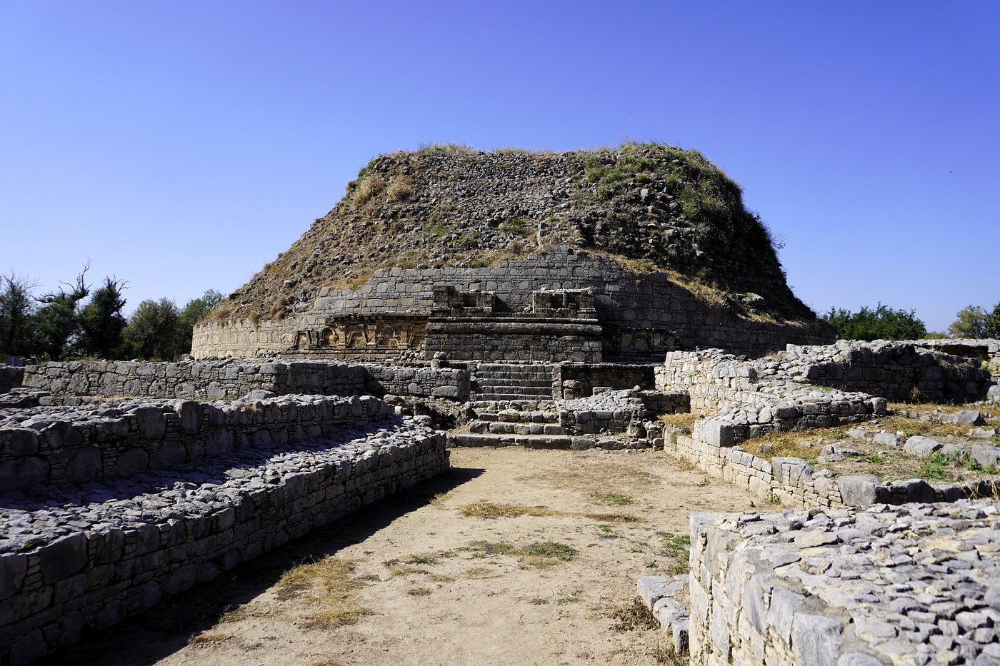
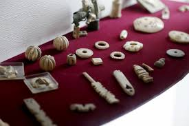
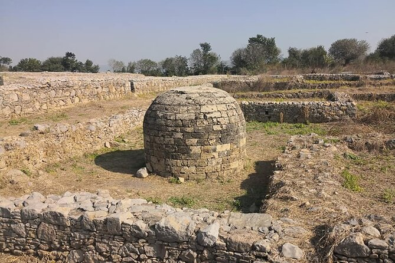

Explore the Ancient Ruins
Taxila is home to numerous historical sites, including:
- Taxila Museum
- Dharmarajika Stupa
- Sirkap and Jaulian Monastery
Dharmarajika Stupa and Monastery
The oldest and greatest Buddhist complex, Dharmarajika stupa, also known as Chir Tope, is located on an eastern path along the Tamra stream, south of Hathial, approximately three km from the Taxila Museum. The name Dharmarajika derives from the fact that the stupa was built on Gautama Buddha's body remnants, the genuine Dharmaraja.




The main stupa has a circular layout, 131 feet in diameter, with a 45-foot-high drum. Several items were excavated from Dharmarajika Stupa and are now preserved in the Taxila Museum. In 1917, a casket with Lord Buddha's remains was discovered here.





The Museum of Taxila
The Taxila Museum exhibits several artefacts, sculptures, and coins from the Gandhara Civilisation. Visitors can view Buddhist relics and sculptures that highlight the region's cultural achievements.
Artifacts in Taxila Museum
The origin of the Taxila Museum lies in the archaeological pursuits of the Archaeological Survey of India (ASI). Sir John Marshall laid the foundation to preserve these precious discoveries.





Jaulian Monastery
Jaulian Monastery, a UNESCO World Heritage site, is an ancient Buddhist monastery complex with intricate stone carvings and relics depicting Buddha's life.


Sirkap Palace
Sirkap Palace, a 2nd-century BCE archaeological site, was known for its unique grid-style layout and distinctive blend of architectural styles, boasting the iconic Double-Headed Eagle Stupa.


